三個產區、16 間酒莊：實際車程、品酒收費、餐飲與建議路線
| 項目 | 內容 |
|---|---|
| 酒後駕駛 | 全牌 < 0.05 g/100mL；P1／P2、學牌、巴士／的士／貨車司機 0.00。隨機呼氣測試在私人地方一樣適用。五個人去，最好指定一位司機全程不飲。 |
| 品酒禮儀 | 吐酒桶（spittoon）是標準配置，試六杯不必全吞；酒莊都有飲用水，開口問就有。 |
| 酒莊時間 | Cellar door 一般 10:00–17:00（週末部分到 18:00），最後一輪品酒通常 16:15–16:30。太遲到會食閉門羹。 |
| 預約 | 2–6 人大多可 walk-in；8 人以上多數要事先預約。部分酒莊上限 6 人（Pt. Leo、Montalto）——五個人剛好，加人就要分兩組。 |
| 附加費 | 星期日／公眾假期部分酒莊加價：Yering Station 週日 +10%、公眾假期 +15%；Montalto 公眾假期 +15%。12/20 係星期日，計預算要預埋。 |
| 帶小朋友 | 大部分酒莊歡迎小朋友（不供酒）。Montalto 有 1 km 雕塑步道、Pt. Leo 有雕塑公園、Chandon 有大草坪，較適合放電。 |
| 酒莊 | 地址 | 距 CBD | 品酒費／人 | 餐飲 | 體驗 · 備註 |
|---|---|---|---|---|---|
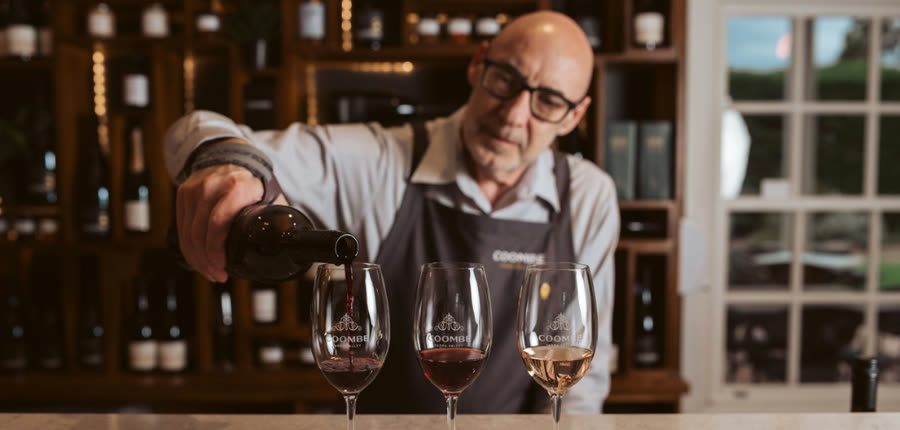 CoombeMelba Estate官網 ↗ |
673–675 Maroondah Hwy, Coldstream VIC 3770 | 47.2 km 50 min |
A$15買任何一瓶可免 | Garden Terrace 輕食 11:30–14:30；餐廳 | Melba 故居；花園導賞 A$15、小屋導賞 A$45。週三至日 |
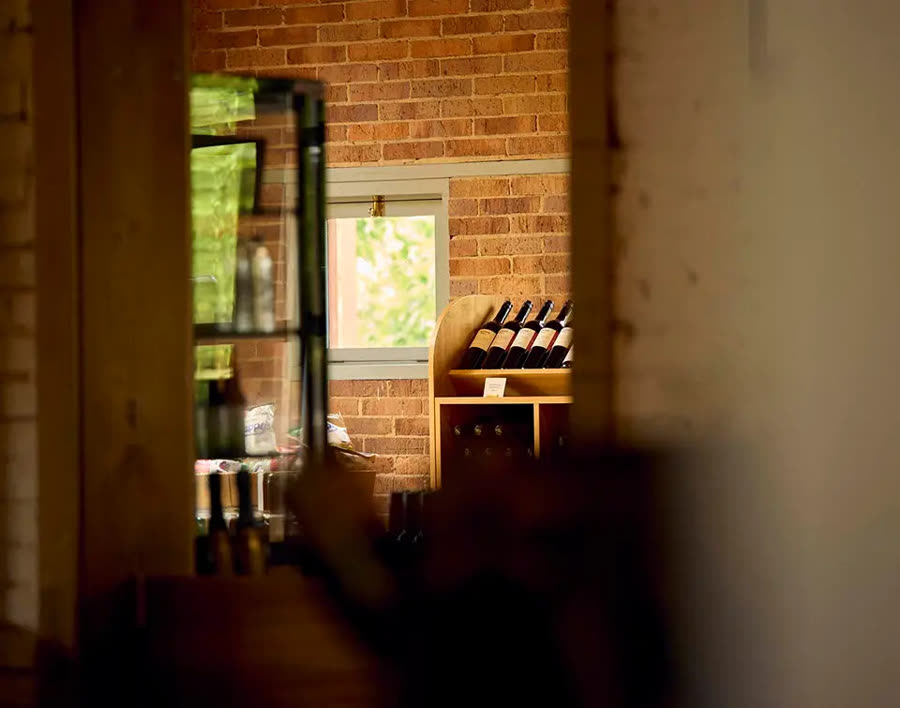 Yering Station1859 年歷史酒窖官網 ↗ |
38 Melba Hwy, Yering VIC 3770 | 52.4 km 54 min |
A$15 / $20 / $35Village／Yering+Yarrabank／Single Vineyard；買酒可抵 | 餐廳每日午餐（單點） | Museum Collection 導賞 A$95／90 分鐘（6 人起）；週日 +10% |
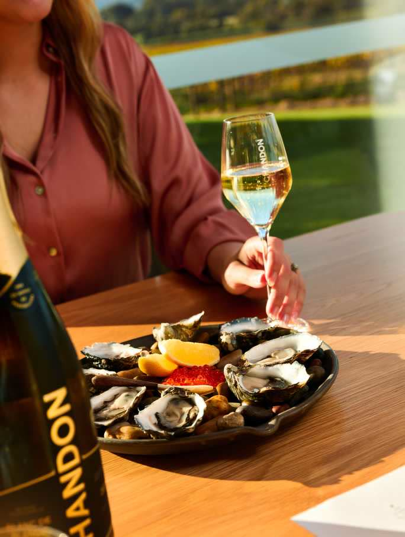 Domaine Chandon氣泡酒官網 ↗ |
727 Maroondah Hwy, Coldstream VIC 3770 | 54.2 km 58 min |
A$22 / $25官網兩版並存：30 分鐘／45 分鐘，以預訂頁為準 | 餐廳（平日單點、週末套餐 A$79 起）；Lounge Bar | Behind the Bubbles A$90；Étoile 私人品酒 A$59；Sparkling Brunch A$75 |
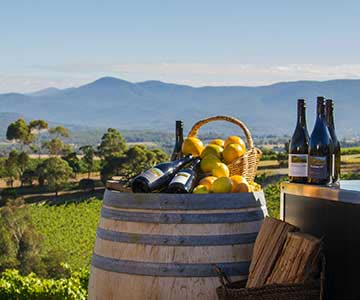 Coldstream HillsJames Halliday 創立官網 ↗ |
29 Maddens Ln, Coldstream VIC 3770 | 54.8 km 63 min |
A$5 / $10 / $15Masterclass A$40 | 只輕食 | 全區最平；山頂景觀。價格以官網為準（分級沿用多年） |
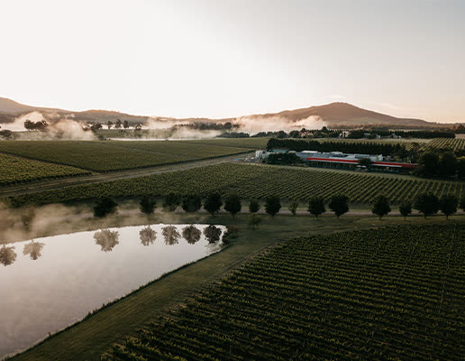 Oakridge餐廳＋菜園官網 ↗ |
864 Maroondah Hwy, Coldstream VIC 3770 | 56.7 km 61 min |
A$15Top Rated Flight A$40；Chardonnay Masterclass A$50 | 餐廳 2025/6/30 已結業，現時只做品酒、無供餐（官方通告）；要食飯去 Chandon／Yering（10–13 分鐘） | A$15 可 walk-in；山谷景觀；864 單一區塊系列 |
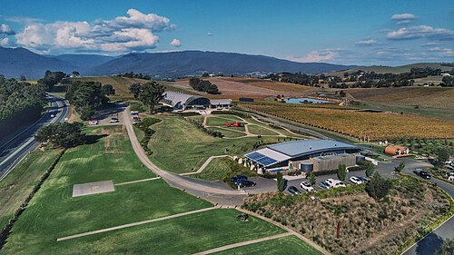 Levantine Hill高端餐酒官網 ↗ |
882 Maroondah Hwy, Coldstream VIC 3770 | 57.8 km 60 min |
需查詢官網未公布散客價 | All Day Dining；節慶套餐 A$145–250 | 架構與藝術收藏；5 人以上套餐 A$210 含品酒＋三道菜＋接送 |
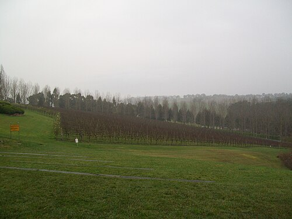 TarraWarra酒＋美術館官網 ↗ |
311 Healesville-Yarra Glen Rd, Yarra Glen VIC 3775 | 63.2 km 66 min |
A$20 / $40Estate 5 款／Premium 6 款 | 餐廳（週三至日午餐） | 地下酒窖；TarraWarra 美術館；UWEA 導賞 A$200、Land, Vine & Vision A$450 |
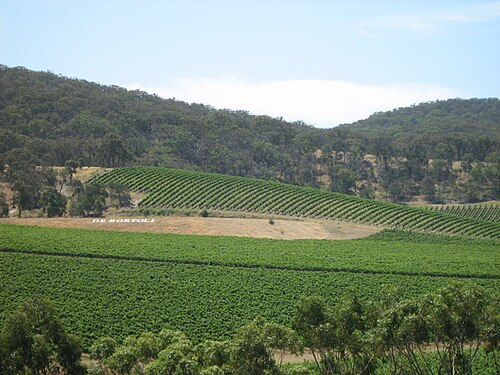 De Bortoli意大利菜官網 ↗ |
58 Pinnacle Ln, Dixons Creek VIC 3775 | 63.3 km 65 min |
A$10–15 / $25Discover 15 分鐘／Indulge 45 分鐘 | Locale 餐廳（週四至一午餐） | 酒窖導賞；Luxury Picnic A$50；芝士房；兒童遊樂場 |
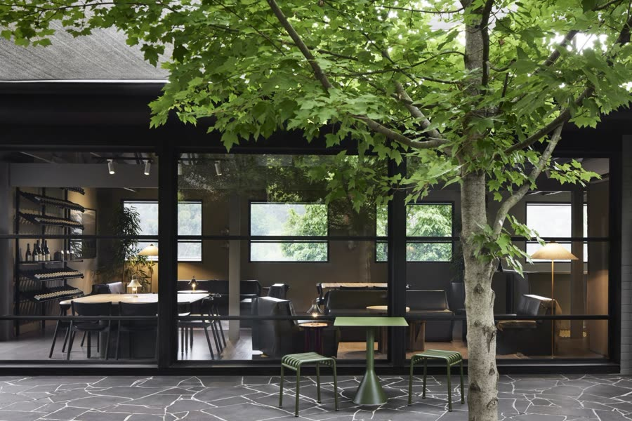 Giant StepsHalliday 2025 年度酒莊官網 ↗ |
314 Maroondah Hwy, Healesville VIC 3777 | 64.3 km 67 min |
A$12 / $30 / $40 / $60By the Glass／Essential／Single Vineyard | 附設餐廳；隔鄰 Innocent Bystander | 單一園 Chardonnay、Pinot Noir；Healesville 大街 |
虛線＝路線 A（Coombe → Yering → Chandon → Oakridge） 點劃線＝路線 B（Oakridge 或 Coombe → TarraWarra → Giant Steps → De Bortoli） 實線＝★ 建議走法（Coombe → Yering → TarraWarra → Giant Steps）；三條都只是示意連線，不代表實際道路走線。Coombe、Chandon、Oakridge 都在 Maroondah Highway 一條線上；Giant Steps 最東，在 Healesville 大街。Hanging Rock 在墨爾本以北 67 分鐘，不在此圖範圍，另見下面馬其頓山脈一節。
亞拉河谷東段一條線，全程 80 km 以內
四間都在 Maroondah Highway 一條線上，不用繞路；品酒費三站共 A$45／人，買酒可再抵一部分。
想睇美術館、飲單一園，走 Melba Hwy 一圈
全程約 110 km，比路線 A 多 30 km；好處是美術館、單一園與意大利菜一次過。
西向東一條線，午餐放第二站；四個停靠四種個性，不重複
全程 133.6 km／約 2 小時 25 分純開車——四站路線中最短，因為完全跟住 Maroondah Highway 東西向走，不用繞路。
午餐換 Chandon 版：Coombe → Chandon（7.2 km／8 min）→ TarraWarra（14.8 km／18 min）→ Giant Steps（5.8 km／9 min），總里程 138.5 km（只多 5 km）；Chandon 週末餐廳套餐 A$79 起、門前大草坪適合小朋友，但品酒 A$22 起，人均會升至 A$150–180。
要注意：Yering 餐廳與 Chandon 餐廳 12 月週末都好滿，要提早訂位；TarraWarra 餐廳只在週三至日開（12/20 週日有開）。
| 酒莊 | 地址 | 距 CBD | 品酒費／人 | 餐飲 | 體驗 · 備註 |
|---|---|---|---|---|---|
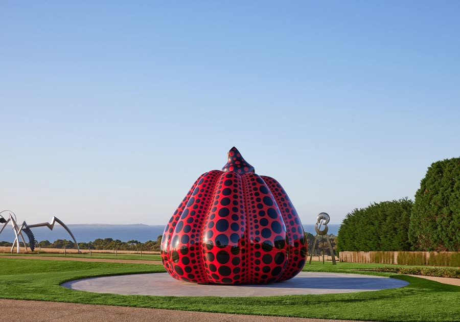 Pt. Leo Estate雕塑公園官網 ↗ |
3649 Frankston-Flinders Rd, Merricks VIC 3916 | 86.6 km 77 min |
A$15 / $25 / $30Estate／Red・White／Premium；每買一瓶退 A$10 | Laura（兩帽）、Pt Leo Restaurant（一帽）、Wine Terrace | 雕塑公園 A$15（餐廳客人 A$5）；60+ 件作品含 KAWS；上限 6 人 |
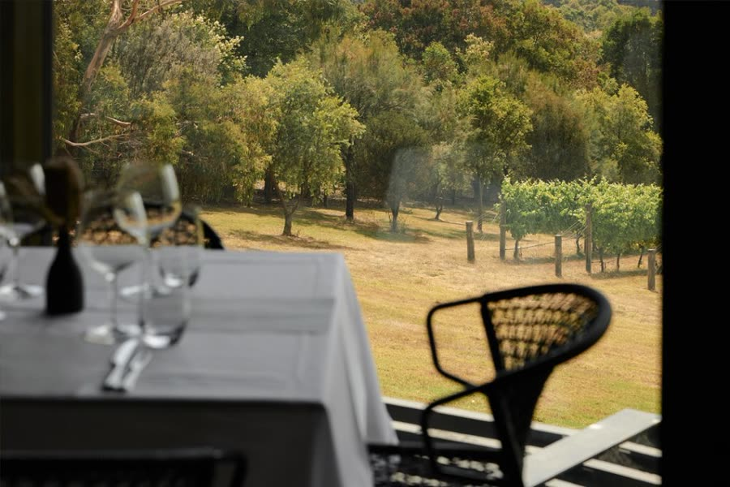 Port Phillip Estate建築與海景官網 ↗ |
263 Red Hill Rd, Red Hill South VIC 3937 | 86.9 km 72 min |
A$15不退；Wine & Cheese A$40、Single Vineyard A$25 | 餐廳：兩道 A$68、三道 A$85 | Kooyong 單一園；Western Port 海景 |
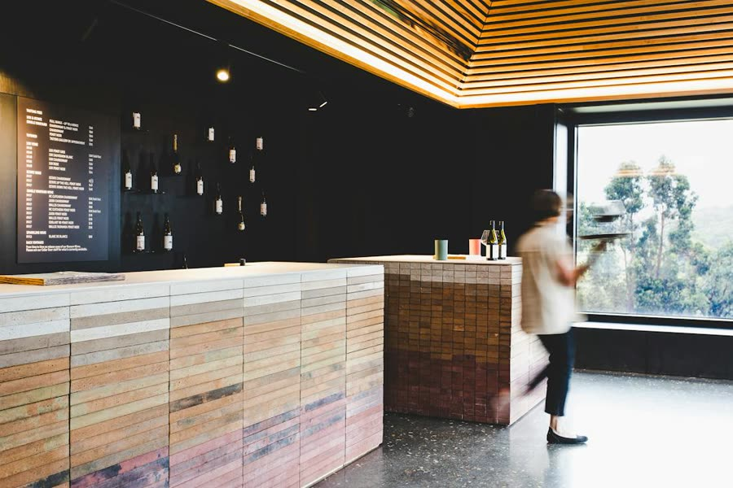 Ten Minutes by Tractor頂級酒單官網 ↗ |
1333 Mornington-Flinders Rd, Main Ridge VIC 3928 | 89.5 km 73 min |
A$15 / $5010X & Estate／Single Vineyard；Masterclass A$120 | 餐廳 tasting menu 約 A$150–250 | 兩帽；Star Wine List 2021–2026 澳洲前列；Masterclass 每日 11:00 |
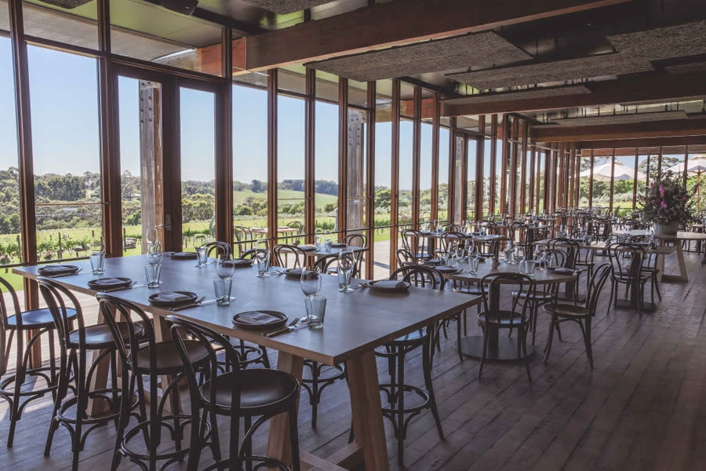 Montalto雕塑步道官網 ↗ |
33 Shoreham Rd, Red Hill South VIC 3937 | 90.1 km 75 min |
A$20買滿 A$45 可免；Wine & Cheese A$40（14:00 起） | The Restaurant（週五至一午餐）；Piazza 輕食每日 | 1 km 雕塑步道免費；上限 6 人；公眾假期 +15% |
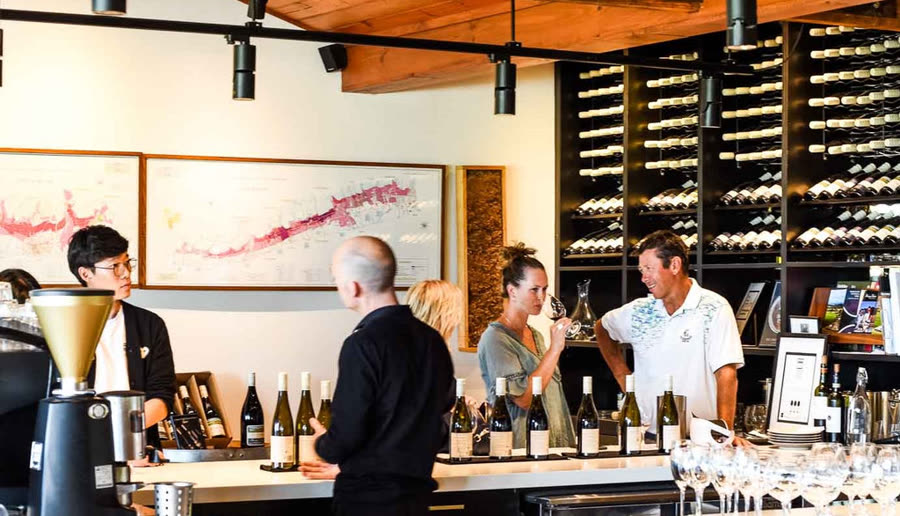 Paringa Estate十頂廚師帽官網 ↗ |
44 Paringa Rd, Red Hill South VIC 3937 | 90.4 km 76 min |
A$10全區最平 | 餐廳套餐約 A$135–450；Garden Dining 週三至日 | 單一園 Pinot Noir；餐廳連續十年 Chef Hats |
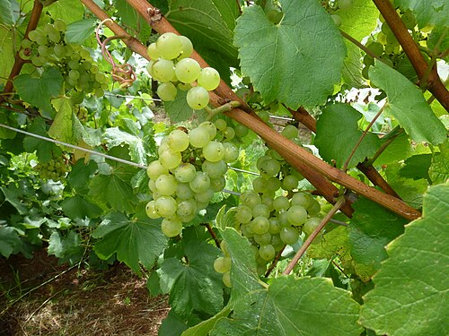 Main Ridge Estate半島第一家官網 ↗ |
80 William Rd, Red Hill VIC 3930 | 約 92 km 78 min |
A$15 / $254 款單一園／加 2 款 Estate；酒農親自招呼 | The Larder（週末午餐） | 1975 年開業；週五至日 11:00–17:00，必須預約 |
虛線＝路線 C 的停留次序（Pt. Leo → Montalto → Port Phillip）；只是示意連線，不代表實際道路走線。Red Hill 一帶四間互相只 5–10 分鐘車程，Pt. Leo 在西邊 Merricks，離其餘五間約 7–9 分鐘。
重午餐、輕品酒；三間剛好，四間太趕
半島酒莊之間只有 5–10 分鐘車程，但單程進出各 75 分鐘；一日三間是上限，想加 Ten Minutes by Tractor 就要放棄午餐。
| 酒莊 | 地址 | 距 CBD | 品酒費／人 | 餐飲 | 體驗 · 備註 |
|---|---|---|---|---|---|
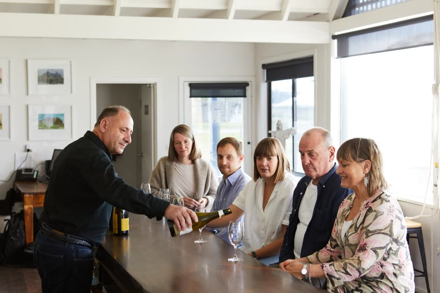 Hanging Rock Winery20+ 款酒官網 ↗ |
88 Jim Rd, Newham VIC 3442 | 78.2 km 67 min |
免費7 人以下；8 人以上導賞 A$15 | 無正式餐廳；本地食材拼盤 A$30 起（2 人） | Art in the Vines 雕塑展（至 2027 年 4 月，免費）；草地野餐；dog-friendly |
適合「不想趕、想省、帶小朋友與長輩」：免費品酒、大草地、雕塑展、免預約。缺點是只有一站、餐廳弱——建議配 Hanging Rock Reserve 行山（來回約 1 小時）或 Woodend 小鎮午餐。
| 車型 | 12 月旺季日租 | 適合情況 |
|---|---|---|
| 經濟／小型車Corolla、MG3 | A$55–85 | 五人坐得落但行李勉強；只適合單日來回 |
| 緊湊 SUVCX-3、Qashqai、RAV4 | A$90–130 | 五人＋少量行李，最平衡；視野好，長輩上落方便 |
| 七人車Carnival、Odyssey | A$110–160 | 第三排可放戰利品；長輩上落最舒服，但市區泊車較難 |
車程與里程以 OSRM 路網計算（free-flow，即不塞車）；實際請預留 +15–20%，週末上午出城另加 20–30 分鐘。收費為各酒莊官網 2026 年公布，酒莊通常每年 1 月與 7 月調整，出發前請再核對。
Yarra Valley 雅拉河谷 · 12/20（日）· 墨爾本出發 ｜ 自駕版本見 01
🏷️ 點睇呢頁：每個地方分兩張表 — 綠色表 = 中文導遊團（優先考慮，長輩啱用）、灰色表 = 英文導遊團（後生仔參考）。選項有編號，建議卡會用編號稱呼。團型：私人團 自訂節奏上門接 ｜ 拼團 併團固定行程 ｜ 拼團／私人 兩種可揀。新增 標籤＝今次補上嘅選項。實際價錢請撳入各活動頁睇平台實價。手機上表格可左右滑動。
墨爾本出發，單程車程約 1–1.5 小時。12/20 係星期日酒莊最旺，早啲訂。
| 選項 | 團型 | 連結 | 內容 · 短評 · 取消政策 |
|---|---|---|---|
| ①Trip.com 亞拉河谷＋普芬比利蒸汽小火車市區酒店接駁可選長輩首選 | 拼團 | Trip.com 活動頁 | 頁面原文「中文司導，溝通無障礙」· 市區酒店接駁可選 · 輕奢團 10 人／精品團 20 人 · 蒸汽火車＋酒莊品酒 ✓ 確認中文 ✓ 酒店接駁 ✓ 蒸汽火車長輩驚喜|✗ 取消政策以平台為準 |
| ②Trip.com 普芬比利小火車＆亞拉河谷酒莊一日遊評論最多嘅中文團 | 拼團／私人 | Trip.com 活動頁 | 4.8★（115 則已驗證評論）· 1,411 份已訂 — 評論原文：「華人司機很耐心，溝通很方便」「導遊 John Huang／Simon 好」· 細項評分全 4.8 · 併團／包團、集合點集合或上門接 ✓ 唯一有大量好評嘅中文團 ✓ 唔使排隊搭小火車|✗ 使用日前 3 天 00:00 前免費取消 |
| ③FIT Travel 紅杉林＋蒸汽小火車＋酒莊 | 拼團 | FIT Travel 活動頁 | 頁面明寫「中文司機兼導遊服務」· 8:30–18:00 · 4 人成團最多 20 人 ✓ 內容最豐富（紅杉林＋小火車＋酒莊）|✗ 導遊小費 A$5／位另付 · 取消政策以平台為準 |
| ④KK Melbourne「KK3 亞拉河谷酒莊」 | 拼團 | KK Melbourne 活動頁 | 華人導遊中文小團 · 包 Yarra Valley Chocolaterie 朱古力廠 · 傍晚 5:30-6:00 返市中心 ✓ 中文／廣東話都通|✗ 取消政策問店家 |
| ⑤YoYo Tours 亞拉河谷美酒佳餚 | 拼團／可包車 | YoYo Tours 活動頁 | 導遊 YoYo 親自帶隊中文小團 · 品酒＋芝士＋特色啤酒 · 可包車 ✓ 中文小團、節奏靈活|✗ 取消政策問店家 |
| ⑥翻玩墨爾本 Fun Play | 拼團 | 翻玩墨爾本行程頁 | 中文一日遊（含亞拉河谷百年酒莊＋朱古力廠） ✓ 中文團|✗ 酒莊係自費品酒，落單前問清楚當日行程 · 取消政策問店家 |
| ⑦德瑞克墨爾本旅遊 | 私人團 | 德瑞克官網 | 中文客製化小團（雅拉河谷酒莊／大洋路／企鵝島） ✓ 可自訂行程，適合長輩慢遊|✗ 取消政策報價時確認 |
| ⑧精英假期 雅拉河谷中文包車／私家團 | 私人團 | 精英假期活動頁 | 中文司導 · 包車／私家團 · 覆蓋酒莊、Healesville 保護區、熱氣球 ✓ 中文司導＋包車，長輩最舒服|✗ 取消政策報價時確認 |
| ⑨Go Explore Melbourne（小品漫遊墨爾本）雅拉河谷尋味廣東話／國語華人導遊新增 | 私人團 | 官網（中文） | 官網明寫「在我們澳洲華人導遊的陪伴下，以流利的廣東話或國語」· 2–11 人尊享包車、8–10 小時、每團最多 8 位旅客 · 持 Parks Victoria 牌照、司機有 Safe Transport Victoria 認證＋急救、A$2,000 萬公眾責任保險 ✓ 全頁唯一明寫「廣東話」導遊，長輩最易溝通 ✓ 小團＋持牌合規，安全資料最齊 ✓ 可配 Yering Station／St Huberts／Chandon／Four Pillars／Yarra Valley Dairy／朱古力廠|✗ 冇公開定價，要 WhatsApp 報價 ✗ 品酒／門票按酒莊另計，總價要自己加 |
| ⑩A Petite Tour 雅拉河谷私人團（中文導遊）GetYourGuide 上架 · 最多 7 人新增 | 私人團 | GetYourGuide 活動頁 | 平台語言欄明列 中文／繁體中文／English · 10 小時 · 最多 7 人私人團 · 平治商務車、墨爾本 CBD 酒店接送 · 路線：Healesville 保護區（門票當日付）→ 兩間酒莊品酒（Chandon／Yering Station，費用自費）→ Chocolaterie 朱古力雪糕 · 可安排輪椅 ✓ 24 小時前免費取消——全頁最鬆 ✓ 私人團＋酒店接送＋輪椅友善 ✓ 同 HV ⑦ 同一間公司，兩個城市一個聯絡|✗ 品酒費、動物園門票自費，埋單要自己加 ✗ 報價以每組計，人多先抵 |
| ⑪永安旅遊 亞拉河谷包車香港平台 · 即時確認新增 | 私人團 | 永安旅遊活動頁 | 標明「中文司機兼導遊」· 5 座最多 4 位（5 位要問 7 座報價）· 墨爾本 CBD 酒店 08:30 接送、19:00 送返 · 門票已包：Healesville 保護區＋Rayner's Orchard 果園＋CHANDON 氣泡酒莊 · HKD 1,813 起 ✓ 香港平台 HKD 付款＋中文客服 ✓ 三個景點門票全包，唔使逐間買|✗ 不可退改——行程未定死之前唔好落單 ✗ 唔包午餐 ✗ 5 人會超 5 座 |
| ⑫萬程／去哪兒 亞拉河谷包車（埃爾法·奔馳 V）上門接送 · 華人司導新增 | 私人團 | 去哪兒活動頁 | 賣點寫「上門接送、華人司導、10 小時服務」· 10:00 墨爾本市區上門接 → Rochford 酒莊酒窖 → Coldstream Dairy 芝士 → 17:40 返 · 含車費、司機講解、小費、兒童安全座椅 ✓ 車型好（埃爾法／奔馳 V），長輩上落舒服 ✓ 已包小費＋兒童座椅|✗ 酒莊門票、午餐自費 ✗ 車型頁面前後寫法有出入（一時 12 座中巴），落單要問實 ✗ 5 天前取消已收 80%、3 天內不可退 |
| 選項 | 團型 | 連結 | 內容 · 短評 · 取消政策 |
|---|---|---|---|
| E1史詩葡萄酒導賞團（Epic）8:45 出發 · 原選項 1 | 拼團 | Epic 營運方官網 | 5.0★（5,217 評價）· 8.5 小時 · 包午餐 · 小團 ✓ 評分之王 ✓ 包午餐|✗ 英文導遊 · 取消一般 48–72 小時前 |
| E2GetYourGuide「Wine & Food Full Day」Red Carpet Wine Tours | 拼團 | Expedia HK 活動頁 | 9.8★（444 評價）· 8 小時 · 免費取消 ✓ 平、評分極高|✗ 英文導遊 · 取消一般 48–72 小時前 |
| E3Klook「雅拉河谷酒莊導覽一日遊」9:30 出發 · 原選項 2 | 拼團 | Klook 活動頁 | 大巴團 · 2-3 酒莊品酒 ✓ 慳錢|✗ 英文導遊、未必包午餐 · 取消一般 48–72 小時前 |
| E4Klook「Wine, Gin, Whisky & Chocolate」 | 拼團 | Klook 活動頁 | 品酒＋氈酒＋威士忌＋朱古力莊 ✓ 有變化唔悶|✗ 英文導遊、酒款太雜 · 取消一般 48–72 小時前 |
| E5Klook「亞拉河谷酒莊私人之旅」 | 私人團 | Klook 活動頁 | 私人 van · 包 Chocolaterie 朱古力／雪糕廠 ✓ 節奏自訂 ✓ 朱古力廠|✗ 官方語言欄只列 English（想中文揀上面 ⑦⑧）· 取消一般 48–72 小時前 |
| E6Klook「Wine and Redwoods Tour」 | 拼團 | Klook 活動頁 | 酒莊＋Redwood Forest 紅木林打卡 ✓ 影相靚|✗ 英文導遊 · 取消一般 48–72 小時前 |
| E7KKday「EPIC 亞拉河谷」語言未確認 | 拼團 | KKday 活動頁 | 4 酒莊＋兩道菜午餐＋朱古力（Epic 同款行程） ⚠️ Epic 本團以英文導遊為主；KKday 頁面核實唔到，落單前必須問客服導遊語言 |
長輩首選：① Trip.com — 中文司導＋酒店接駁＋蒸汽火車。
口碑之選：② Trip.com — 4.8★（115 則評論）· 評論確認「華人司機溝通方便」· 前 3 天免費取消。
內容最豐富：③ FIT Travel（紅杉林＋小火車＋酒莊）。
私人團慢遊：⑦ 德瑞克 或 ⑧ 精英假期。
⚠️ E1（Epic）／E2（Red Carpet）評分最高但係英文導遊。
新增：長輩最易溝通揀 ⑨ Go Explore（全頁唯一明寫廣東話導遊，每團最多 8 人，但要 WhatsApp 報價）；想取消最鬆揀 ⑩ A Petite Tour（24 小時前免費退、7 人私人團、酒店接送）；⑪ 永安 門票全包但不可退改；⑫ 萬程 埃爾法／奔馳 V 上門接送，適合長輩上落。
Hunter Valley 獵人谷 · 12/15（二）· 悉尼出發
悉尼出發，單程車程約 2.5 小時。
| 選項 | 團型 | 連結 | 內容 · 短評 · 取消政策 |
|---|---|---|---|
| ①Trip.com 獵人谷酒莊＋芝士＋朱古力廠私人團獨立包團 · 酒店接送長輩首選 | 私人團 | Trip.com 活動頁 | 頁面原文「司機及遊覽講解（普通話）」· 去程酒店接送 · 08:00–17:30 · 百年酒莊＋芝士廠＋朱古力廠 · 5.0★、41 人訂過 ✓ 私人團＋接送＋普通話＝長輩最舒服 ✓ 最多 9 人|✗ 取消政策以平台為準，落單前問清楚 |
| ②Trip.com 獵人谷品酒一日遊套票揀「中文服務」 | 拼團 | Trip.com 活動頁 | 套票 A 中文／套票 B 英文 · 普通話司機導遊 · 含午餐 · 07:00 帕茲角集合、17:30 返 · 拼團最多 50 人 · 5.0★（7 則） ✓ 有評價 ✓ 前 10 日 00:00 前免費取消|✗ 最多 50 人大巴 |
| ③永安旅遊 悉尼獵人谷一日遊香港平台 | 拼團 | 永安旅遊活動頁 | 頁面明寫「中文司導為您服務」· 08:30 達令港富麗華酒店集合、18:30 返 · 午餐＋品酒已包 · Peterson House 氣泡酒（自費）· 朱古力廠 ✓ 香港平台 HKD＋中文客服|✗ 自行去集合點 ✗ 不可退改 |
| ④Klook 獵人谷一日遊（中文導覽）原選項 A | 拼團 | Klook zh-HK 活動頁 | 標題「中文導覽」· 語言欄「英文/中文」· 含午餐 · 10-11 小時 ✓ 確認中文導遊|✗ 評分只有 3.0／5（僅 2 則）✗ 自行前往集合 · 取消一般 48–72 小時前 |
| ⑤途風 獵人谷品酒一日遊 | 拼團 | 途風活動頁 | 中文司機兼導遊＋含小費 · 2-3 酒莊＋午餐＋巧克力芝士品嚐 · 6 人成行 · 06:45-07:00 集合、日日出發 ✓ 小費已包|✗ 要自行去集合點 · 取消一般 48–72 小時前 |
| ⑥愛溜達 獵人谷＋中央海岸一日遊 | 拼團 | 愛溜達活動頁 | 服務語言中文 · 含午餐 · 4 人成行 · 08:30 指定地點上車 · 加遊 The Entrance 鵜鶘廣場＋湖中長堤 ✓ 睇野生鵜鶘＋湖景棧橋，長輩新鮮感|✗ 取消一般 48–72 小時前 |
| ⑦A Petit Tour 中文包車 | 私人團 | 官網（中文） | 華人司機包車 · 自訂節奏 · 上門接送 · 8 座車已夠 5 位＋司機 ✓ 華人司機（中文溝通）✓ 長輩最舒服|✗ 貴過大巴 · 取消政策問店家 |
| ⑧澳中國旅 獵人谷一日遊悉尼唐人街集合新增 | 拼團 | 澳中國旅活動頁 | 費用明列「中文導遊司兼導」· 07:30 唐人街 78 Harbour St 集合、18:00 返 · 全日 11 小時 · 悉尼市區酒店可接送（落單要註明）· 逢二／四／六／日發團，包車天天出發 · 4 人成行，不足 4 人全額退款 · 路線：獵人谷酒莊＋Scone 歷史小鎮＋朱古力廠＋芝士廠 ✓ 本地自營，唔經平台抽成 ✓ 酒店接送＋成團保障寫得好清楚|✗ 午餐自理 ✗ 品酒費頁面前後寫法有出入（一時寫「包」、一時寫「自理」），落單前一定要問實 |
| ⑨新天地旅行社 獵人谷極致美食與美酒中文團 · 6 人成團新增 | 拼團 | 新天地活動頁 | 標題直寫「中文團」· Mount Pleasant＋Audrey Wilkinson 兩間酒莊＋朱古力廠 · voco Kirkton Park 兩道菜午餐 · 已含品酒費＋司導小費＋樽裝水 · 08:00 中央車站／08:15 富麗華，回程只送呢兩個點 · 17:30 散團 ✓ 含午餐＋品酒＋小費，一價到底最好計 ✓ 酒莊揀得好（Audrey Wilkinson 景觀靚）|✗ 頁面註明：當日或會安排雙語司導（英文主講、中文輔助），想全程中文要落單前問實 ✗ 唔送返其他酒店 |
| ⑩KKday 獵人谷一日遊（中文服務）4.6★ · 200+ 已售新增 | 拼團 | KKday 活動頁 | 語言欄列 English／Japanese／Mandarin · 3 間酒莊＋品酒＋午餐＋樽裝水 · 07:55 中央車站／08:00 富麗華 · 4.6★、200+ 已售 · 6 人成團 ✓ 13 天前免費取消（平台級保障最好）✓ 銷量够多，行程成熟|✗ 8–12 天前取消收 30%，7 天內不可退 ✗ 頁面係英文，落單要揀「中文」套餐 |
| ⑪Trip.com 獵人谷一日遊（中文團·免小費）4.8★ · 100+ 已訂新增 | 拼團 | Trip.com 活動頁 | 頁面寫「中英文團可選、免小費」· 兩間酒莊＋兩道菜午餐＋朱古力廠 · 07:55 中央車站／08:15 富麗華、17:30 散 · 4.8★（9 則）、100+ 已訂 ✓ 使用日前 7 天 01:00 前免費取消 ✓ 免小費、含午餐|✗ 評價數量仍少（9 則）✗ 與 ② 行程相近，二選一就夠 |
| ⑫華夏包車 悉尼⇄獵人谷公開報價表 · 中文司機需預約新增 | 私人團 | 華夏包車價目頁 | 10 小時包車，公開價目：4 座 AUD850／Alphard 6 座 AUD950／奔馳 V 7 座 AUD1,000／海獅 11 座 AUD1,100，超時 AUD70–100／鐘 · 已包油費、高速、停車、悉尼市區酒店接送 ✓ 全網少有公開價目，方便同 ⑦ ⑫ 比價 ✓ 彈性最大，可加酒莊／花園|✗ 頁面寫「可安排英文司機，如需中文司機請提前確認」→ 中文唔係包有 ✗ 品酒費、門票、餐費、專業導遊費全部另計 |
| 選項 | 團型 | 連結 | 內容 · 短評 · 取消政策 |
|---|---|---|---|
| E1Klook「Wine, Gin & Cheese Tasting Tour」 | 拼團 | Klook 活動頁 | 小團 · 3 間 boutique 酒莊＋蒸餾廠＋芝士 ✓ 小團高質|✗ 英文導遊，長輩聽唔明 · 取消一般 48–72 小時前 |
| E2Viator「All Inclusive Wine, Chocolate & Lunch」 | 拼團 | 活動詳情＋訂購 | 3 酒莊品酒＋午餐＋Peterson House 朱古力 · 包接載 ✓ 最平包午餐朱古力|✗ 英文導遊 · 取消一般 48–72 小時前 |
| E3Viator「All Inclusive Boutique Wine Tour」 | 拼團 | Viator 活動頁 | 4.8★（588 評價）· boutique 小團 · 朝 7:00 酒店接 · 約 11 小時 ✓ 高質小團|✗ 英文導遊 · 最貴 · 取消一般 48–72 小時前 |
| E4Klook 獵人谷私人一日遊 | 私人團 | Klook 活動頁 | 私人團 · 自訂節奏 · 上門接 · 官方語言欄只列 English ✓ 長輩最舒服|✗ 想中文要問客服（建議改揀上面中文私人團） |
| E5GetYourGuide「2-Course Lunch & Chocolate」 | 拼團 | GetYourGuide 活動頁 | 2 道菜午餐＋朱古力品嚐 · 免費取消 ✓ 多平台比價|✗ 英文導遊 · 取消一般 48–72 小時前 |
長輩首選：① 私人團 — 普通話司機導遊＋酒店接送（5 位要揀 7 座或以上）。
想平啲有評價嘅：② Trip.com 拼團（套票揀中文服務、前 10 日免費取消）。
香港平台：③ 永安（但不可退改＋自行去達令港集合）。
⚠️ ④ Klook 雖然係中文但評分只有 3.0；升級可揀 ⑦ 包車。
新增：一價到底揀 ⑨ 新天地（含兩道菜午餐＋品酒＋小費，但要問實係咪全程中文）；取消保障最好揀 ⑩ KKday（13 天前免費退）或 ⑪ Trip.com（7 天前免費退）；⑫ 華夏包車有公開價目表，用嚟同 ⑦ 比價最實際（中文司機要預約）。
① 頁面有冇寫「中文司導／中文導覽／普通話講解」（唔係得中文介面） ② 包唔包午餐＋品酒費 ③ 集合點／有冇酒店接送
HV ② 前 10 日免費取消、⑩ 前 13 日、⑪ 前 7 日；YV ② 前 3 天、⑩ 前 24 小時（最鬆）；Klook／Viator／GYG 一般 48–72 小時前；不可退改：HV ③ 永安、YV ⑪ 永安，落單前想清楚；YV ⑫ 前 7 日免費、前 5 日收 80%。私人團（HV ①⑦⑫、YV ⑦⑧⑨⑪⑫）報價時確認。12/20 星期日酒莊最旺，早訂早安心。